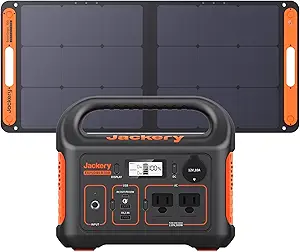

📰 The Slaying of Charlie Kirk — Read the Post
They didn’t just kill a man — they sparked a movement. Draw the line in the sand.
📰 Bud Over Booze — Read the Post
How I chose the plant that sharpened my edge—and how you can, too.
🧪 Take the Grit Quiz
10 fast questions. Get your score + tailored next steps.
👕 This Is The Turning Point Tee
Premium fit. Bold message. 10% of profits to TPUSA.
🜠The Ant, the Grasshopper & the Locked Door
Darker modern fable—boundaries, math, and no hard feelings.
🧰 Build Your 7-Day Kit
Water, calories, heat & light, hygiene, info — your don’t-knock baseline.
🔥 How the Amish Stay Warm in Winter
Stoves, window quilts, humidity, and a daily rhythm you can steal.
🐻 Hugh Glass: The Man Who Wouldn’t Die
Pirates, Pawnee, a grizzly, and a 200-mile crawl.
🲠5 Survival & Camp Recipes (No Fridge)
Pantry-only meals that don’t taste like cardboard.
💪 From Skinny to Strong
How I went from frail and sick to capable and confident.
🐎 Preparing for the Pale Horse
Revelation, collapse, and how to face the end with grit.
💧 Top 5 Home Water Filters
From LifeStraw to Berkey—strip the bad stuff out.
🐔 The Chicken Shortage of 2025
Backyard birds, quiet panic, and lessons learned.
🌞 Solar Fan Hat Review (Yes, Seriously)
Looks goofy. Works amazing. Kept me alive at 100°F.
🔥 5 Things I No Longer Buy
Quit the waste. Keep the grit.
🚔 Surviving County Jail
Fear, boredom, and twisted humor—keeping your soul intact.
🐻 Man vs Bear
The internet picked the bear. We picked reality.
🗡️ Kamp King Knife Review
Classic look. Rugged build. Less gear to carry.
⚔️ When Violence Is the Answer
Hard lines, clear rules. No bravado.
💥 The Masculinity Manifesto
🛸 UFOs & Government Deception
🎒 Survival Items That Earned Their Place
🧊 How to Keep Cool During a Blackout
🩸 I Should Be Dead: The Grit Story
🔥 GoOut Stove Review
Boil water, cook meals, warm your hands.
🔥 Featured Gear: Portable Power Kit

We ran this on a no-power Ozark cabin trip: fan, lights, phones, cooler. Built tough. Quiet. Reliable.
🛒 Buy Now on Amazon